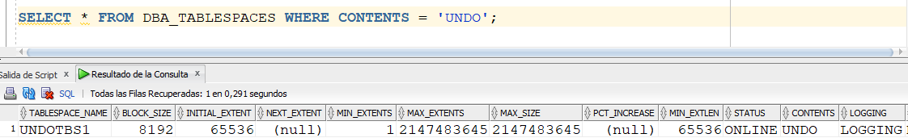
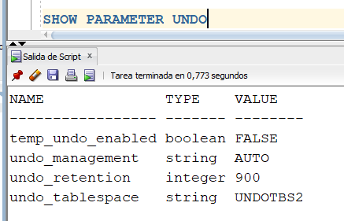
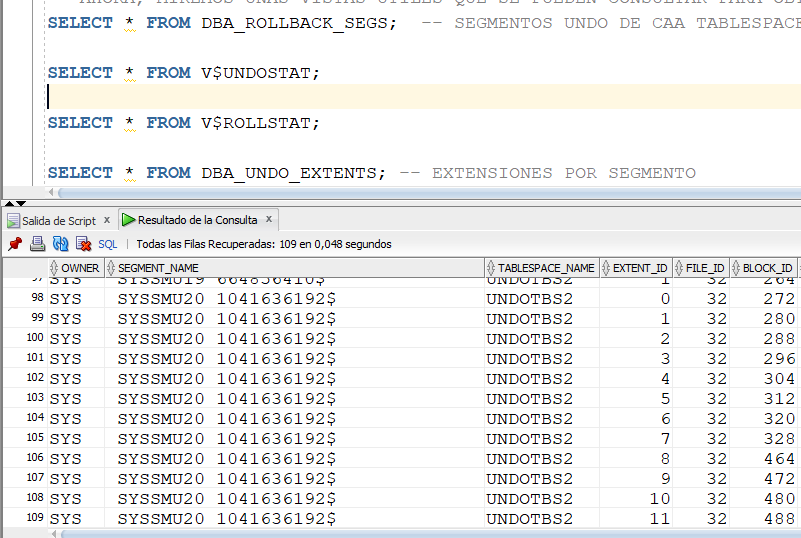

UNDO
En alguna parte, Oracle guarda los datos "viejos" (o de undo) cuando se realiza algún cambio en la base de datos.
Si la transacción hace commit, estos datos "viejos" ya no sirven para nada. Si se hace un rollback, se deben restaurar estos datos "viejos".
Estos datos "viejos" se guardan hasta que la transacción termine, de una forma u otra.
ESte mecanismo de undo se utiliza para:
- Poder hacer rollback de los cambios.
- Para mantener consistencia en lectura.
- Para hacerle recovery a transacciones que no han terminado bien (bloqueo del servidor, interrupción de energía eléctrica, etc.).
- Para dar soporte a la funcionalidad de Flashback de Oracle.
|
Gráficamente, lo podemos pensar de la siguiente manera: Ante un UPDATE hecho, los datos nuevos y viejos van a dar al SGA y al REDOLOG, pero solamente los datos viejos caen al TABLESPACE UNDO. Por qué tener tantos sitios donde guardar los datos, en forma repetida? Téngamos en cuenta que el SGA es memoria RAM y, por lo tanto, se puede perder ante, por ejemplo, una interrupción eléctrica. En cambio, el UNDO es un tablespace, es decir, disco duro. Estos datos viejos se guardan, en el tablespace UNDO, en un sitio llamado Segmento de UNDO. Hay que recordar que, por instancia, solo puede haber un tablespace UNDO activo. |
|
|
Para entender un poco lo que significa la consistencia en lectura, analicemos la imagen mostrada. Supongamos que hay una transacción que, a las 10:30 a.m., ejecuta un SELECT "grande", es decir, que hace ordenaciones, agrupamientos, selecciona muchos datos, etc. Y ese SELECT grande, en algún momento de su ejecución, debe acceder a un "4" que hay en el disco. Diez minutos mas tarde, 10:40 a.m., aún sin haber terminado de ejecutarse el SELECT grande, hay otra transacción que hace un UPDATE y cambia el "4" por un "5". En este caso, el "4" se almacena en el tablespace UNDO, y el "5" queda en el disco. |
|
 |
El problema en este caso es que el SELECT grande va a encontrar un dato ya actualizado, el "5", cuando en realidad él necesitaba el "4". Este SELECT grande detecta que el dato que necesita ha sido cambiado y, por lo tanto, hace la búsqueda de dicho dato en el tablespace UNDO. Por eso es importante el tablespace UNDO para la consistencia en lectura. Por algunos parámetros de configuración, es posible que cuando el SELECT grande busque el "4" en el UNDO, éste ya no exista. Esta situación es la que se conoce como error de Snapshot too old. |
En versiones "antiguas" de Oracle, el UNDO se llamaba rollback segments, la cual se debía configurar en forma manual.
En versiones recientes, se ha implementado el AUTO UNDO MANAGEMENT, que utiliza UNDO segments. Es una gestión automática de Oracle de los segmentos UNDO.
Lo ideal es no tocar absolutamente nada del manejo de los segmentos UNDO, los cuales están en el tablespace del mismo nombre.
Vamos a mirar, a continuación, cómo está implementado la sección UNDO dentro de Oracle.
|
Primero, consultemos los parámetros que tengan que ver con el UNDO. El parámetro undo_management está en AUTO, queriendo decir que la gestión del UNDO es automática. El parámetro undo_retention, el cual está dado en segundos, dice el tiempo mínimo que permanece el dato UNDO grabado en dicho segmento. En este caso, mínimo 15 minutos (900 segundos) despues del COMMIT, permanece el dato UNDO. Esto no significa que a los 15 minutos, automáticamente el dato UNDO se borre. Solo se borra si Oracle ve la necesidad de reutilizar el espacio. Y el parámetro undo_tablespace dice cómo se llama el tablespace UNDO activo. En Oracle, pueden haber varios tablespace UNDO, pero solo puede haber uno activo. |
|
|  |
Si se necesita ver los tablespaces de UNDO que se tienen, se puede ejecutar la instrucción siguiente. Como se puede observar, el tablespace se llama UNDOTBS1, tiene un tamaño de bloque de 8192 bytes (default), el máximo tamaño de ese tablespace es 2 Gigas aproximadamente (MAX_SIZE), está en estado ONLINE y su tipo de contenido es datos UNDO. |
|
Y si queremos mirar los data files asociados a dicho tablespace, nos damos cuenta que solo tiene un data file. Por defecto, el tablespace se llama UNDOTBS1 y lo asocia a un data file llamado undotbs1.dbf. |
Ahora miremos un poco, a través de un ejemplo de una transacción, donde quedan grabados sus datos de UNDO.
| Se crea una tabla y luego se le inserta una tupla. Al hacer el INSERT, se activa una transacción. | |
|
Para comprobar que existe una transacción activa, podemos consultar la vista V$TRANSACTION. En el resultado podemos observar una serie de datos muy técnicos, pero uno de los que nos interesa está en la columna UBAFIL. En dicha columna aparece un 4. Esto quiere decir que esta transacción está guardando los datos UNDO en el data file No. 4, asociado al tablespace UNDO. Como podemos ver en las imágenes anteriores, donde consultamos los Data Files de dicho tablespace, nos damos cuenta que el único Data File asociado tiene el FileId 4. |
|
|
Cuando hacemos un COMMIT, es decir, damos por terminada la transacción, ya no existe nada en V$TRANSACTION. |
Ahora abordemos cómo se puede crear un nuevo tablespace UNDO y cómo decir que se utilice dicho tablespace.
| Podemos crear un nuevo tablespace UNDO con el comando mostrado. Nótese que hay que poner la palabra UNDO, y es importante dejarle a Oracle la gestión automática del espacio de dicho tablespace. Esto se logra con la cláusula AUTOEXTEND y el MAXSIZE. El tamaño inicial del tablespace son 100 megas, cuando éste se llene, creazca otros 10 megas, y acepte un tamaño máximo del tablespace de 250 megas. | |
| Si hacemos la consulta de los tablespaces UNDO que existen, ya aparecen dos, incluido el recien creado tablespace UNDOTBS2. | |
|
Pero si miramos con SHOW PARAMETER, el tablespace que sigue activo por defecto es el tablespace UNDOTBS1. Cómo cambiar el tablespace por defecto? |
|
|
Se ejecuta el ALTER SYSTEM mostrado, en el cual se le cambia el valor al parametro UNDO_TABLESPACE. Y con el SCOPE=BOTH estamos asegurando que dicho cambio quede grabado tanto en la instancia como en el SPFILE. Como podemos mirar, el tablespace que ya esta por defecto es el UNDOTBS2. |
|
|
Ahora, activemos una nueva transaccion. Y nos damos cuenta que los datos UNDO están siendo grabados en el UBAFIL 32...... |
|
|
....el cual corresponde al FileID del nuevo tablespace. Es la muestra de que ya los datos UNDO están siendo grabado sen el nuevo tablespace, el que se configuró por defecto. |
A continuación, se mira un poco más en detalle el tema del tiempo de retención de los datos UNDO. En realidad, este tiempo de retención solo tiene sentido si configuramos la gestión automática del tablespace UNDO, tal y como se hizo anteriormente.
|  | Podemos observar que el parametro UNDO_RETENTION está configurado en 900 segundos, es decir, 15 minutos. |
|
Para modificar dicho parámetro, ejecutamos el comando mostrado. Podemos observar que el valor del parámetro ha sido cambiado por 1800, es decir, 30 minutos. Esto se hace con el comando ALTER SYSTEM. |
|
|
Si queremos garantizar que el tiempo de retención se cumpla, es decir, que el dato UNDO se quedé grabado como mínimo ese tiempo, podemos ejecutar el siguiente comando. En general, para Oracle es más importante las transacciones de UPDATES que simples SELECTS. Pero si necesitamos, por ejemplo, darle prioridad a la consistencia en lectura, podemos configurar el tiempo de retención garantizado, tal y como se hizo acá con la cláusula RETENTION GUARANTEE. |
A continuación, se hacen unas consultas útiles sobre ciertas vistas que almacenan información del UNDO.
|
En la vista denominada DBA_ROLLBACK_SEGS podemos observar datos referentes a los segmentos de UNDO creados. Recordar que un tablespace se compone de uno a mas segmentos. En este caso, el tablespace UNDOTBS2 ya tiene diez segmentos. A partir de esta consulta, podemos mirar si la cantidad de segmentos de un tablespace UNDO crece o decrece, dando a entender que dicho tablespace también crece o decrece. |
|
|  |
Otras vistas interesantes, aunque muy técnicas, son las que aparecen en la imagen. Vale la pena recordar que un segmento se compone de una o más extensiones, lo cual se refleja en la consulta que se le hace a DBA_UNDO_EXTENTS. Como se puede observar, el segmento llamado SYSSMU20 104.... tiene asociados 12 extents, numerados del 0 al 11 (EXTENT_ID). |
Para borrar un tablespace UNDO, es igual que borrar cualquier otro tablespace. A continuación se muestra el comando.
|
Si tratamos de borrar el tablespace que está activo por defecto, saca el error meostrado. Solo se pueden borrar tablespaces que no estén activos por default, y el comando es el que se muestra. |
REDO LOGS
Son dos o más archivos preasignados que almacenan todos los cambios realizados en la base de datos, a medida que se producen.
Los Redo Logs sirven para recuperar la base de datos, en caso de un fallo de instancia.
La recuperación de la base de datos se hace en dos fases diferentes: las transacciones que ya estaban "commiteadas", se graban definitivamente en el data file. Y las transacciones que no estaban "commiteadas", se les hace el rollback, utilizando los segmentos de UNDO.
A continuación, se detalla un poco en el funcionamiento de los Redo Logs Files.
|
Vamos a suponer que tenemos tres Redo Log Files asociados. El proceso background LGWR empieza a grabar en el Redo Log File 1. En este momento, dicho Redo Log File se encuentra en estado Current, y los otros dos en estado Inactive. |
|
|
Cuando el Redo Log File 1 se llena, se produce lo que se denomina un Log Switch. En el Log Switch, el Redo Log File 1 queda en estado Active, el Redo Log File 2 es el Current, y el Redo Log File sigue inactivo. También, en un Log Switch, todo lo del Redo Log File 1 se sincroniza con el Data Buffer, y luego se baja el Data Buffer a los Data Files. |
|
|
Los Redo Log Files se comportan como un anillo. Cuando el Redo Log File 2 se llena, se pasa a estado Active y el Redo Log File 3 pasa a ser el Current. |
|
|
Y cuando el Redo Log File 3 se llena, vuelve y empieza a llenar el Redo Log File 1. |
 |
Es importante entender que los Redo Log Files existen, no solamente para poder recuperar a la base de datos en caso de falla de instancia, sino para regular la grabación en los Data Files. Tanto los Redo Log Files como los Data Files son disco duro, y sabemos que la escritura en disco en costosa. Pero la grabación en los Redo Log Files es menos costosa, porque se hace una grabación secuencial de datos.
Vamos a mirar cómo es el funcionamiento de los Redo Log Files.
|
Con la vista V$LOG, podemos mirar la información de los Redo Log Files. Como se puede observar, se tienen 3 Redo Log Files. La columna SEQUENCE# corresponde a un consecutivo interno que tiene cada Redo Log File, cada Redo Log File mide 209 megas aproximadamente, y el Redo Log File que está actualmente en Current es el 3, los otros dos Redo Log Files están inactivos. También podemos observar que el SCN (System Change Number) final de un Redo Log File (Next Change #) es el SCN inicial del siguiente Redo Log File (First Change #). Es importante mencionar que para que el efecto de anillo se produzca, el siguiente Redo Log File a ser usado debe estar inactivo, no puede estar activo (no se ha terminado de sincronizar con el Data Buffer) y/o Current. |
|
|
Si queremos mirar los datos de los Redo LOg Files físicos, usamos la vista V$LOGFILE. |
|
|
Ahora, vamos a forzar un LOG SWITCH para ver el funcionamiento en anillo. Esto se hace con el comando mostrado. Como se puede observar, el Redo Log File 1 ahora es el Current, y el Redo Log File 3 queda activo, sincronizándose con el Data Buffer. Cuando el Redo Log File 3 termina su sincronización con el Data Buffer, pasa a estado Inactive.
|
Normalmente, este comando SWITCH LOGFILE no se usa. Oracle gestiona el LOG SWITCH automáticamente, cuando un Redo Log File se llena. Para efectos académicos, lo usamos para mirar el funcionamiento en anillo.
A continuación, vamos a mirar cómo se multiplexan (se graba un espejo) los Redo Log Files. Esto se hace agregando un miembro a cada grupo. Como podemos ver en las imagenes anteriores, cada Redo Log File pertenece a un grupo distinto (GROUP #), y cada grupo tiene un solo miembro (MEMBERS). Lo ideal es que cada grupo de Redo Log Files tenga dos miembros. Esto con el fin de asegurar disponibilidad de estos Redo Log Files, en caso de fallos de uno de ellos.
|
Con el comando mostrado, puedo agregarle un miembro a cada uno de los 3 grupos de Redo Log Files que tenemos. Observe que ahora, cada grupo tiene 2 miembros (MEMBERS).
|
|
|
Haciendo la consulta en V$LOGFILE, podemos observar que ya hay 6 Redo Log Files físicos. Aparece los 3 nuevos Redo Log Files en estado INVALID. Esto no es problema. Simplemente, la próxima vez que ese Redo Log File se vuelva Current, dejará de estar INVALID. |
|
|
En este momento tenemos Current el Redo Log File 2. |
|
|
Si hacemos un LOG SWITCH, el Redo Log File 3 pasa a ser el Current. Y si miramos ahora los Redo Log Files, vemos que el nuevo Redo Log File del Grupo 3 dejó de estar en estado INVALID. |
Así como se pueden agregar miembros a un grupo, también se pueden adicionar nuevos grupos. Es lo que haremos a continuación.
|
En la imagen, estamos creando un nuevo grupo de Redo Log Files, el 5, el cual tiene dos miembros, y cada miembro con un tamaño de 100 megas. Podemos observar que el Redo Log File del grupo 5 está en estado UNUSED, ya que no ha sido usado por primera vez para almacenar datos REDO. Cuando el efecto de anillo llegue al grupo 5, cambia de estado. |
|
|
Si forzamos un LOG SWITCH, vemos que el Redo Log File del grupo 5, pasa de UNUSED a CURRENT. |
|
|
Por otro lado, podemos observar que ya hay 8 Redo Log Files físicos, correspondientes a cuatro grupos, y cada grupo con dos miembros. |
Por otra parte, también podemos eliminar miembros de un grupo. Es lo que se va a mostrar a continuación.
|
Para hacer el ejercicio, vamos a mirar cual es el Redo Log File Current. En este caso, es el Redo Log File del grupo 5. |
|
|
Vamos a tratar de borrar un miembro del grupo 5. Esto se hace con el comando ALTER DATABASE DROP LOGFILE MEMBER, y haciendo referencia directamente al Redo Log File físico que se quiere borrar. Podemos observar que genera un error. No se puede borrar un miembro del Redo Log File que está Current. Tiene lógica. No puede borrar un miembreo en el cual actualmente se le está grabando transacciones.
|
|
|
Hagamos un LOG SWITCH para mirar que pasa. El Redo Log File 5 queda ACTIVE y el Redo Log File 1 es el CURRENT.
|
|
| Ahora, al intentar borrar el miembrO del grupo 5, no hay problema a pesar de que está ACTIVE. Oracle termina de hacer la sincronización de dicho grupo, y luego borra el miembro.
|
|
| Podemos observar que ya hay 7 Redo Log Files físicos, y el grupo 5 solo tiene un Redo Log File, un miembro. |
 |
| También se puede ver consultando el V$LOG. El grupo 5 tiene un solo miembro, mientras que los otros tienen 2 miembros. |
 |
|
Qué sucede cuando tratamos de borrar el único miembro de un grupo? En este caso, para hacer el ejercicio, vamos a borrar al único miembro del grupo 5. Cuando lo intentamos, saca error. Efectivamente, cada grupo debe tener mínimo un miembro. |
En conclusión, al borrar un miembro de un grupo hay dos restricciones para hacerlo:
- Que no sea un miembro del grupo CURRENT.
- Que no sea el único / último miembro del grupo.
Ahora, procedamos a borrar un grupo.
| Para borrar el grupo 5, y todos sus miembros, ejecutamos el comando mostrado. | |
| Como se puede observar a través de la vista V$LOG, ya no existe el grupo 5 de Redo Log Files. |
Una última acotación: cuando borramos un miembro y/o un grupo, se hace un borrado lógico del mismo. Esto quiere decir que el archivo físico, en el sistema operativo, sigue existiendo. Hay que ir a la carpeta del sistema operativo, y hacer el borrado manual.
ARCHIVELOG
Una base de datos en Oracle puede estar en dos posibles estados:
- Archivelog
- NoArchivelog
Una buena manera de mostrar la importancia de esto es decir que una base de datos en producción que esté en estado NoArchivelog es un "suicidio".
Con una base de datos en modo Archivelog, ante una falla, se puede recuperar la base de datos hasta el momento del fallo. En cambio, con un estado NoArchivelog, se podría recuperar alguna parte de la base de datos, perdiendo datos.
Vamos a mirar a continuación cuál es la diferencia entre estos dos estados.
|
Vamos a suponer una base de datos, con dos Data Files, en estado NoArchivelog. Supongamos que a dicha base de datos se le hace backup completo el lunes a las 2:00 a.m. Dicha base de datos tiene 3 Redo Log Files. Despues del backup, la base de datos sigue funcionando y se empieza a llenar el Redo Log File 1 con lo que trabajaron los usuarios entre las 2:00 a.m. y las 8:00 a.m. Cuando se llena este Redo Log File, se empieza a llenar el Redo Log File 2 y éste queda con lo trabajado entre las 8:00 a.m. y las 12:00 m. Cuando se llena el Redo Log File 2, se empieza a llenar el Redo Log File 3, el cual contiene lo trabajado entre las 12:00 m y las 2:00 p.m. En este momento, por lo del funcionamiento en anillo de los Redo Logs, vuelve y comienza a llenarse el Redo Log File 1 |
| |
|
Debemos entender que lo que había en en Redo Log File 1 se sobreescribe y se pierde, aunque este Redo Log File ya ha sido sincronizado y bajado a los Data Files. Vamos a suponer que después de las 2:00 p.m., cuando se está volviendo a llenar el Redo Log File 1, hay un fallo de los Data Files. Como lo del Redo Log File 1 se perdió, lo que hay en los otros Redo Log Files no sirve para nada, y por lo tanto, lo único que se puede recuperar es el backup hecho a las 2:00 a.m., perdiendo todo lo que se había hecho desde ese momento hasta el momento del fallo. |
|
|
Ahora, vamos a suponer el mismo caso pero en una base de datos en estado ArchiveLog. Una base de datos en ArchiveLog lo que hace es que cada que se llena un Redo Log File, graba lo que hay en él en un Archived Redo Log, en un archivo aparte. |
|
|
Si tenemos una falla en el mismo momento del ejemplo anterior, la base de datos va a poder ser restaurada exactamente hasta el momento del fallo. La recuperacion se hace cogiendo el backup hecho a las 2:00 a.m., a dicho backup aplicándole todos los cambios almacenados en los Archived Redo Log, y aplicando al final los cambios hechos reflejados en el Redo Log File que estaba Current en el momento del fallo (Redo Log File 1). |
Ahora miremos algunos comandos útiles para el manejo del concepto de Archivelog.
|
Para saber si la base de datos está en modo Archivelog, ejecutamos el comando mostrado. En la columna denominada LOG_MODE, vemos que la base de datos no tiene configurado el Archivelog. |
|
|
Para poder configurar la base de datos en modo Archivelog, debemos primero configurar dos parámetros importantes:
|
|
| Para cambiar la base de datos a modeo Archivelog, debemos hacer un shutdown a la instancia. Esto lo hacemos por SQL Plus.
|
|
| Luego, vamos a arrancar la instancia en modo MOUNT. | |
| Estando en este modo (MOUNT), podemos verificar en qué estado se encuentra la base de datos. Podemos ver que el Archivelog está desactivado. | |
| El comando para cambiar al estado Archivelog es el que se muestra. | |
| Luego, debemos abrir la base de datos para poder empezar a trabajar en modo Archivelog. | |
| Podemos verificar, de nuevo, que sí haya quedado en estado Archivelog. |
A partir de este momento, cada vez que se llene un Redo Log File, debe grabar un Archivelog. Para mirar que esto sí suceda, hagamos el siguiente ejercicio.
|
Para simular que un Redo Log File se llenó, hagamos un LOG SWITCH.
|
|
|
Podemos observar que en la carpeta en la cual configuramos el parámetro LOG_ARCHIVE_DEST_1, aparece ya un Archivelog, cuyo nombre tiene el formato dado en el parámetro LOG_ARCHIVE_FORMAT. |
|
|
Si volvemos a hacer un LOG SWITCH, ya aparecen dos ARchivelogs. El segundo archivo generado es mucho más pequeño en tamaño, porque en el Archivelog se graba lo que se ha ocupado del Redo Log File. |
|
|
Es de aclarar que, de todas maneras, en la carpeta configurada con el parámetro DB_RECOVERY_FILE_DEST, la File Recovery Area, también se graban estos Archivelog, con nombres poco nemotécnicos. Nótese que los tamaños de los dos archivos en las dos carpetas son iguales. |